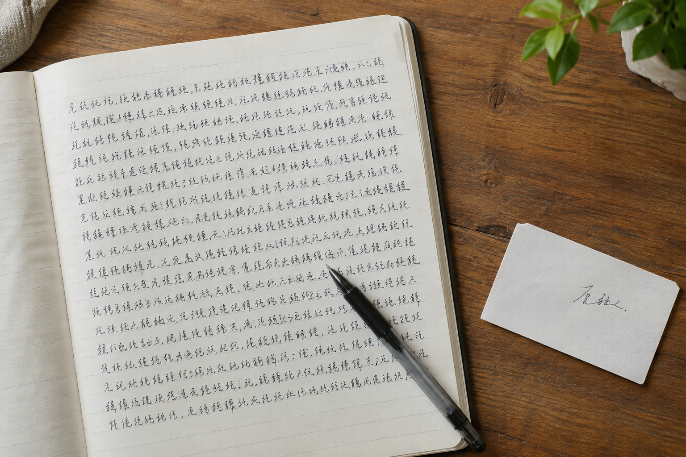

上海手写长文和落款签名，为什么不宜用同一张样本说明
正文写法与落款动作常常相连，却不是一回事。

阅读距离不同
一段长文首先呈现行距、段落留白和字形变化；落款签名则以几个字的组合与连贯动作为主。上海模仿笔迹样本若只有签名近照，难以判断整页文字的节奏。
同一人也有不同写法
正式信件末尾可能写全名，内部便条上却只写简写。模仿签名与模仿签字应区分使用场景，别把两种写法拼成一套不存在的样本。
分别保存文件
拍长文时保留完整页和几处局部；拍签名时连同所在纸面、日期一起留存。笔迹鉴定的对比材料还应记录来源，避免后来无法确定哪个版本最接近原件。